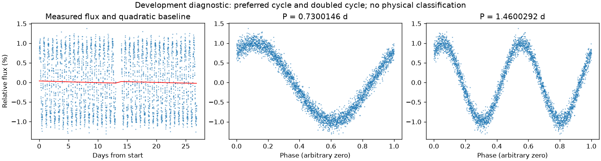
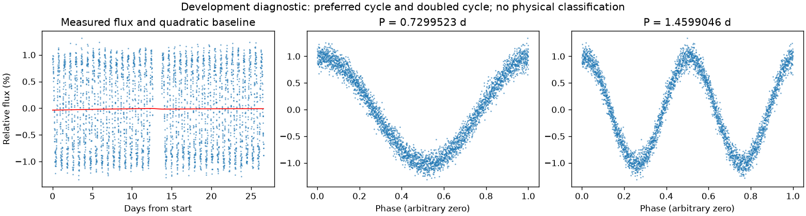

有重复信号，来源尚未充分检查
亮度重复周期约 0.72998344 天。这是优选亮度周期，未给出正式误差或物理分类。
第三版周期：0.7300146051532083 天；状态：preferred_lightcurve_cycle。

左图红线是缓慢基线；右面两图去除该基线。若未通过周期要求，两图只展示得分最高的竞争解释。
| 竞争周期（天） | 预测方法与改善 | 各组改善 | 通过初筛 |
|---|---|---|---|
| 0.7300146 | 交替循环：97.3% | 97.3% / 97.4% | 是 |
| 1.4599586 | 交替循环：97.3% | 97.4% / 97.2% | 是 |
| 1.4828560 | 交替循环：26.5% | 26.9% / 26.1% | 是 |
| 1.4365054 | 交替循环：22.0% | 21.4% / 22.7% | 是 |
| 0.3508494 | 交替循环：12.2% | 12.2% / 12.2% | 否 |
| 0.7025476 | 交替循环：6.3% | 5.5% / 7.1% | 否 |
| 0.7595902 | 交替循环：6.2% | 5.0% / 7.4% | 否 |
| 0.3783677 | 交替循环：5.0% | 4.9% / 5.1% | 否 |
“预测改善”衡量用一组周期的形状预测另一组，比只有缓慢基线好多少；负数表示更差。搜索和预测共用了资料，因此这不是可信概率，也不是独立验证。
第三版周期：0.7299522768397186 天；状态：preferred_lightcurve_cycle。

左图红线是缓慢基线；右面两图去除该基线。若未通过周期要求，两图只展示得分最高的竞争解释。
| 竞争周期（天） | 预测方法与改善 | 各组改善 | 通过初筛 |
|---|---|---|---|
| 1.4599758 | 交替循环：97.4% | 97.3% / 97.4% | 是 |
| 0.7299523 | 交替循环：97.4% | 97.4% / 97.3% | 是 |
| 1.4381108 | 交替循环：29.1% | 27.4% / 30.9% | 是 |
| 1.4850420 | 交替循环：19.5% | 18.2% / 20.7% | 否 |
| 0.3505513 | 交替循环：17.2% | 17.6% / 16.7% | 否 |
| 0.3786020 | 交替循环：10.1% | 10.2% / 10.1% | 否 |
| 0.7020736 | 交替循环：6.6% | 7.6% / 5.7% | 否 |
| 0.7598010 | 交替循环：6.5% | 5.6% / 7.6% | 否 |
“预测改善”衡量用一组周期的形状预测另一组，比只有缓慢基线好多少；负数表示更差。搜索和预测共用了资料，因此这不是可信概率，也不是独立验证。